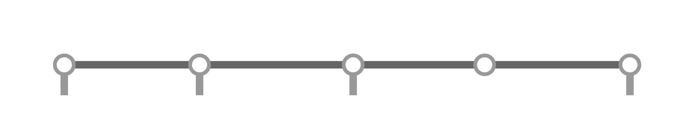
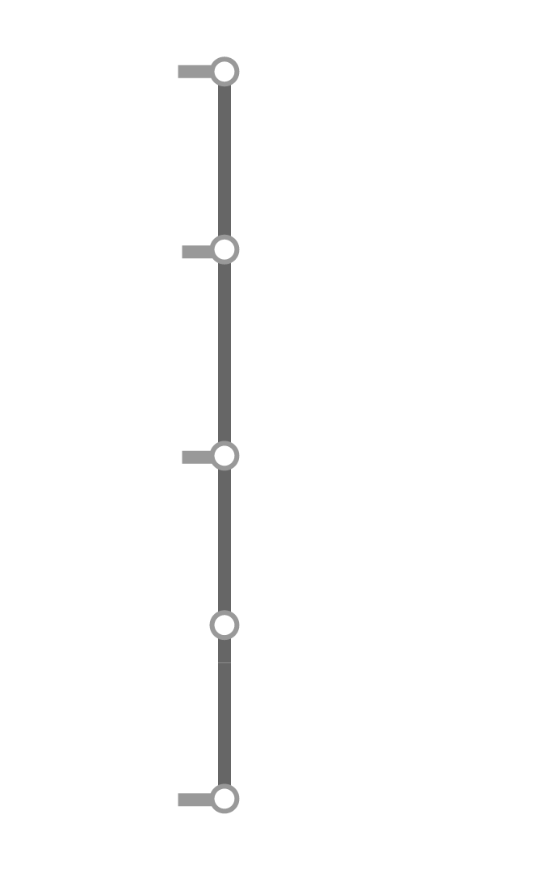
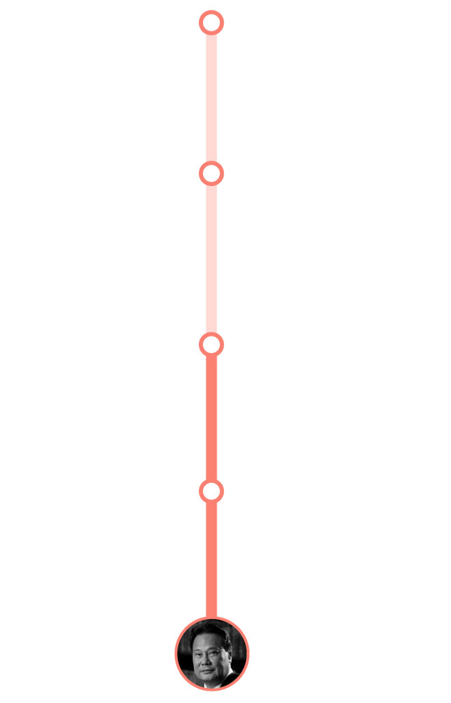

The Philippines' experience with impeachment
When a public official is
accused
of irregularity, citizens may file a criminal case against them that, if
won, would have them jailed. But in some cases like for presidents in
the Philippines, officials could be immune from suit. In other cases,
criminal cases run and are often not resolved for years, while public
officials concerned continue to be in power. In these instances,
impeachment is an available recourse.
Under Article XI of the Philippine Constitution, the president,
vice-president, Supreme Court justices and members of constitutional
bodies such as the Commission on Audit and Elections may be removed from
their posts through impeachment. It bears noting that impeachment only
removes a government official from office – simply put, a conviction
does not jail them. That said, successfully removing an impeachable
official may bar that official from holding public office again and, in
some cases, removes their immunity from criminal cases, making them
vulnerable to future suit.
The Philippine impeachment process

Complaint filed
at House
of Representatives
Senate conviction
(removal from office)
House justice
committee approval
Full House approval
(impeached)
Can come from a citizen or House member
By one-third of all members
(at least 106 of current 318 members)
By two-thirds majority
(at least 16 of 24 senators)

Can come from a citizen or House member
Complaint filed
at House of Representatives
Full House approval
(impeached)
By one-third of all members
(at least 106 of current 318 members)
Senate conviction
(removal from office)
By two-thirds majority
(at least 16 of 24 senators)
An impeachment complaint will need to get the vote of at least a third
of the members of House of Representatives to succeed. Once that
happens, the official is deemed "impeached" and will face the Senate on
trial. It bears noting that an impeached official may continue to
exercise their duty in office while on trial.
At the Senate, the 24 senators act as judges, while select members of
the House are the prosecutors. A two-thirds majority — or at least 16
members of a full Senate — are needed to convict and remove the official
from position.
Since 1986, numerous impeachment complaints had been filed against
Philippine officials, but only a few successfully progressed. Four
officials were impeached by the House of Representatives, but only one —
former chief justice Renato Corona — was removed by the Senate following
the impeachment process. The rest resigned from their posts before they
can be tried.
Below are these impeachment cases.
Chief Justice Renato Corona
Charged: Betrayal of public trust, failure to declare
assets in SALN
Outcome: Removed from office, May 29, 2012
Senate conviction
(removed from office)
Full House approval
(impeached)

Full House approval
(impeached)
Senate conviction
(removed from office)
Chief Justice Renato Corona's appointment as Philippines' top judge
became controversial because he was named to the post at the waning days
in office of former president Gloria Macapagal-Arroyo. Her successor,
Benigno Aquino III, denounced what was called a "midnight appointment"
by Arroyo allegedly to shield her from prosecution after her immunity
from suit lapsed with her term.
A year and a half into office, Aquino's allies at the House of
Representatives impeached Corona for "betrayal of public trust." The
impeachment complaint against him garnered enough support at the time,
that it didn't have to undergo a committee vote. He was
later convicted
by 20 of 23 senators for failure to disclose millions of pesos in assets
to his Statements of Assets Liabilities and Net Worth (SALN). Corona had
consistently denied any wrongdoing.
What came after?: Corona died in 2016. He was 67.
President Joseph Estrada
Charged: Betrayal of public trust, corruption,
bribery
Outcome: Resigned, Jan. 20, 2001
Senate conviction
(removed from office)
Full House approval
(impeached)
Full House approval
(impeached)
Senate conviction
(removed from office)
The Philippines had its first glimpse of an impeachment trial when the
House of Representatives impeached former president Joseph "Erap"
Estrada in 2000. Estrada, an actor who campaigned for the presidency as
man of the masses, was accused of
bribery,
corruption, betrayal of public trust and violation of the Constitution.
At the center of the complaint against him was the allegation he
received over P10 million in paybacks a month from former Ilocos Sur
Governor Luis "Chavit" Singson to protect the latter's illegal gambling
operation, jueteng, in the province. His impeachment trial,
however, was interrupted after his allies prevented the release of a key
evidence against him. Protests ensued thereafter, forcing him to leave
Malacañang, the presidential palace, which the Supreme Court said was
tantamount to a "constructive" resignation. Arroyo, his vice-president
at the time, replaced him.
What came after?: Estrada, as a citizen, was charged
with plunder but was later on pardoned by Arroyo, giving him his full
political rights back. He ran again for the presidency in 2010, but lost
to Aquino. He served as
mayor of Manila
from 2013 to 2019.
Ombudsman Merceditas Gutierrez
Charged: Betrayal of public trust
Outcome: Resigned, April 29, 2011
Full House approval
(impeached)
Senate conviction
(removed from office)
Full House approval
(impeached)
Senate conviction
(removed from office)
Merceditas Gutierrez was accused of failing to act on corruption cases
against former president Arroyo, who appointed her as ombudsman. Two
impeachment complaints were filed against her, alleging she failed to
swiftly act on cases involving the controversial contracts such as the
$329.5-million national broadband deal with China firm ZTE Corp., and
that of government fertilizer funds, both of which allegedly became
sources of kickbacks for Arroyo.
Gutierrez fought the allegations against her, questioning the
impeachment complaints before the
Supreme Court, but to no avail. She was impeached by the House of Representatives on
March 23, 2011, but before her trial at the Senate could begin, she
resigned from her post on April 29 that year.
Elections chair Andres Bautista
Charged: Betrayal of public trust
Outcome: Resigned, Oct. 11, 2017
Full House approval
(impeached)
Senate conviction
(removed from office)
House justice committee junked the complaint, but was reversed
by full House.
House justice committee junked the complaint, but was reversed
by full House.
Full House approval
(impeached)
Senate conviction
(removed from office)
The impeachment complaint against Andres Bautista, chair of the
Commission on Elections (Comelec), came after he was accused by his
wife, Patricia, of failing to declare assets in his SALN. The complaint
was formalized when Harry Roque, Abraham Tolentino and Gwendolyn Garcia,
at the time all House representatives allied with then president Rodrigo
Duterte, filed a case against Bautista in 2017. Bautista was also
accused of betrayal of public trust, rooted from a hacking incident
during the election season in 2016. Bautista was appointed to Comelec by
Aquino.
The complaint was deliberated upon by the House justice committee, where
it was initially declared "insufficient in form and substance" to
proceed. However, the House of Representatives, as an entire body,
decided to override the justice committee's decision to scrap the
complaint, prompting Bautista's impeachment. While this was happening,
Bautista sent Duterte a resignation letter effective end of 2017.
However, Malacañang said Bautista's resignation was "effective
immediately", disrupting the impeachment process.
What came after?: After resigning, Bautista left the
Philippines for the U.S. in November 2017. He was later
indicted
by the U.S. federal grand jury for allegedly taking bribes from
Smartmatic, the company that supplied the election machines used for the
2016 elections when Bautista was Comelec chair.
Source:
Author's research
Sources of photos:
GSIS, Supreme Court, Joseph Estrada's Facebook page, Rappler
Copyright 2024 - The
Data Dictionary
Project